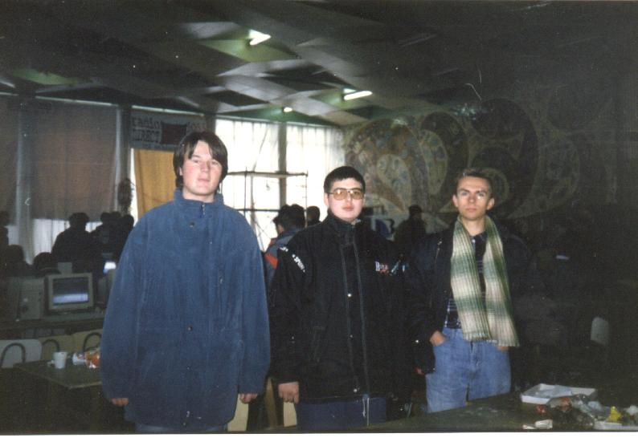

If you don't know what the demoscene is, it might be useful to read
this faq.
Here are the few things our group (Phantom Image) or I've done
for download:
5 4k intros in one pack.
Our demo Mangala is too fat and too boring to be put on the net.
The first computer like thing I got in contact with, was a video
game in the amusement park in Budapest in 1986 when my family visited
Hungary for the first time with me. It was a table top game, a kind
of omni directional galaxians clone, there were aliens coming from
all the directions and you were in the middle of the screen and had
to survive. It wasn't too hard, or maybe I was just too good at it,
because I played it for a quarter of an hour, and then my parents
got bored, and I had to leave it there. It was all black and white,
and my first touch to computers, and the last one for the next 7
years to come.
My first computer was a C64, which I got for the Christmas of
1993 from my uncle, whose sons also got one. I was the luckier one, on
my cartridge were the better games, including Flimbo's Quest,
a game still on my all time favourite list. I remember that Christmas
night we called my uncle to ask how to actually
do something with "the machine" because we were able to plug all
the cables in the right places and on the tv we saw, that some strange
thing called the Commodore Basic V2 started and i could type with
it and after pressing the Return key, always "Syntax Error. Ready."
appeared. But how to PLAY? So then they told us, that there was this
"cartridge" thing, and it had to be plugged into the "user port" and
then "the machine" must be restarted and then the menu with the
games would appear. And so it did. It took us a few weeks to realize
that the Flimbo game actually has levels, and you have to collect
those scrolls and get them to the magician. I can't remember the first
time I advanced to the second level (or was it my sister, we were
playing one by one :)), but it must have been like when man first
brought fire into his cave. That game played an important role in
my life at that moment. I could never finish it though, it was too
hard for me, but a few times I could get to level 7. Years later,
I've beaten the game on emulator with trainers, but it was not so
fulfilling. It was just another game finished, even if the first
ever game that I played.
My first contact with "the scene" was when in the summer of 1994 I
bought a magazine called "Commodore Vilag" while I was in a history
camp in Szolnok in Hungary. There was "scene spirit" written
all over it, I've never ever read any magazine like that. It had an
unequaled feeling to it and of course CoVBoy is my all time
favourite main editor. I need not speak more of that magazine, those
who have seen at least one edition, know what I'm talking about,
those who haven't, don't know what they're missing. It's allright,
like all good things in life, it wasn't to last for long. Still,
there was the first asm source that I ever saw, though at the time
I didn't understand anything of it. But I knew, that there existed
such magical things, as raster scrollers.
So, in 1994 I already had a computer, and my parents let me go to
the local computer club in my future high school every week for two
hours. Of course, we had to pay for it, but I was happy that I
was taught BASIC and we made some small programs on the C64. There
were 8 or more C64's and at first two PC's (an XT, with 640 kb
ram, Hercules monitor, 20 megs of hdd, and a 286 with 1 mb ram, ega
monochrome monitor (brown was the "light" color, yay :))) and then
later a 386 was brought that had color monitor and 4 megs of ram
and 200 megs of hdd. Of course, we weren't allowed to even touch
these machines, so my craving for one began because they were so
much cooler than the C64. And they somehow contained the games, there
was no need to load them from the datasette. Of course, all this
time, I learned how to copy games with ABC TURBO and I started to
know people who also had some games and so the swapping of games
began. I've made good friends through these C64 courses with Balazs
Miklos (ex-Rau/PI) and later on with Sajgo Tibor, who was the elitest
of us all because some wealthy relative of his bought him in Budapest
an IBM laptop, with a 386 SX-20 processor, 2 mb ram, and 40 mb hdd.
Wow, he was a more than welcome guest in our house and we played a
lot of Test Drive 2 and Death Track, that's for sure. Also, there
was this computer club at the Sudent's House, but it was not held
regularly still every saturday morning, no matter how cold it was
sometimes, we were there waiting to be let in to get our hands on
a 286 for two hours. It was mostly spent watching some guy playing
Prince of Persia, he was pretty good at it, I remember he could
reach level 7. Then we learned how to cheat in that game, and it lost
it's appeal. :)) Anyway, we had the best talks waiting for those
2 hours on those cold saturday mornings. :))
Time passed. The C64 only meant BASIC and funny little games, while
the PC was PASCAL and worse games, but also things like Civilisation,
which I have first mistaken with an accounting program. :)) It was
time for my entrance in high school and I asked my parents to buy
me a PC, because in the computer science class where I applied,
that was needed. So, I sold the C64 to some friend for the money
to be stashed for the PC. Only years later I realized what a fool
I've been. There was a small chess contest and I won a book about the
6502 and the inner workings of the C64. I was so surprized of how
much it's capable of. I've always regretted selling my C64. If only
somebody would've shown me an assembler and some good documentation...
In high school, we started Turbo Pascal for real. Too bad, I already
knew everything they were teaching, so I needed to do something new.
I got my new PC, a 386, with 4 mb ram and 200 mb hdd. And then
I got two books (Laszlo Jozsef: The programming of the VGA card
and Agardi Gabor: Practical Assembly), and learned to code in
assembly, because it was so cool and it was needed to code games.
Then, through CD GURU I got some diskmags, and the scene really
started to take shape in front of my eyes. First I got hold of a lot of
64k intros, only around 1996 I was able to see the famous 2nd reality.
But by then, I dug myself round all the Imphobia's and stuff. It
was useful, that maybe every 2 or 3 months my father took me to his
working place and there I had lots of internet. So, the first demo
I downloaded was actually Vivid Experiment/Doomsday, and the first
demo that I saw too. The first 64k I don't remember. Oh yeah, on
our quests for computer time, one other place we attended was
INFOCLUB and there I saw the first batch of 4k intros, mostly from
ASM'94. Must I say how amazed we were? Anyway, slowly I was
experimenting with mode 13h in Pascal, each day learning something
new. Those were days of constant coding fun.
By the end of the holiday after 9th grade, I finished my first game,
in pascal, a clone of Galactix. Then, I thought of something else,
to create a diskmag. There was this Hungarian diskmag, The Guide
that I liked so much that I just had to make one like it. So, I
coded an engine quickly in text mode and showed it to a friend,
Orban Botond (ex-Coder/PI) together with Szabo Nagy Attila
(ex-Crackkk/Merlin Software Company). Oh yeah when we were doing
the diskmag, we were still calling ourselves Merlin Software Company.
Coder said that he would code a much better graphical engine based
on object oriented programming, and so he did. Meanwhile, Crackkk
and I were writing some articles and also another friend of mine
joined, Csiki Attila (ex-ZP/MSC). He was probably the best writer
of us. Then came the endless debugging afternoons when we were
at Coder's place and he was still coding the mag and we were bugging
him to hurry and finish. One day he finished he did even an editor
and lots of neato stuff and our diskmag was ready to be released.
But we didn't know how to release it so we just took it to school
and showed it to everyone. They didn't care much. We put it on
Rau's BBS, but it was too large to be downloaded (around a disk :))
on the time's infrastucture (the BBS was running on a 14.4k modem).
Nevertheless we produced 3 more diskmags the 3rd got an entirely
new gui coded again by Coder but we were unsatisfied with his
article writing speed, and while we had our stuff ready for the 4th
issue, he left somewhere and so I recoded the gui in an entirely
different style and that was the 4th and last issue. We put some
tremendous work into it but it was obvious that nobody cared so
we realized it was time to stop the diskmag business when my 11th
grade started. My first intro was a BBS intro for Rau's BBS, coded
in Pascal, it featured a simple sinus scroller and some lines were
bouncing in the back. Some people who taught me things about
programming in general, but who were never involved with the demoscene
were Kiss Istvan, Janossy Szabolcs, Lazar Laszlo, Kemenes Robert and
Molnar Laszlo.
An important source for scene material was the cd companion of the
Hungarian CHiP magazine, which included almost monthly the best
releases of the month's best parties. These were the times when I
watched the most demos, and started to understand some effects and
have some ideas about what design means. So from time to time I
could code a classical effect sometimes by looking at other sources
and sometimes by experimenting. For example I understood the
classical tunnel, by looking at the u and v tables which were
left out in binary form in one of the famous TPOLM tunnel demos.
Even the plasma effect I understood by myself. But I couldn't figure
out the bump effect it was some Slovakian source that shed the light
on it for me. This year (around 1996) was the time when I contacted
the scene in Romania for the first time. It was through a BBS in
Piatra Neamt, which was run by PuthreGuy/General Failure. I remember
logging into it some times and spending an hour in chatting and
downloading. We did some classical mail swapping too. I don't remember
how I met Amorroxic/Hipnotica, but we swapped a lot of stuff,
once I sent him around 10 cds in a normal envelope and everything
went right. :)) But this must have been somewhere in the spring of
1998, because then he would've told me about Reunion'97, and
Dracula'97. I remember emailing with some USA guy, called Dennis
Courtney, back when emailing meant for me and account at a BBS
in Miercurea Ciuc called INFOKLUB which used to spool email once in
a week.
I downloaded this thing called BAssPasC, a funny programming language
which was a mixture mostly of Pascal and Basic, but it produced .asm
output to be compiled with tasm. I really liked it, because until
then, I didn't code in asm only, there was always some Pascal shell
around it. So, I started to write my very first 4k intro. Meanwhile
I found the Romanian Demoscene Emailing List too, so there I was
where I belonged. Too bad I don't really remember anything about it,
just that once we wanted to organize an online party, but it never
came to be. I had normal email and I started writing emails to some
sceners, that is how I became friends with Credo/SCS*TRC^Resource.
His scene column in the Hungarian game mag Pc-X was also a very good
source of demos, and ofcourse ftpmailing, that I used to download
entire directories from ftp.cdrom.com. Soon, my 4k intro was ready
to be finished and I was looking for my first party to release it at.
My first demoparty happened to be Ragest'98, probably the biggest
party in Hungary of all times. I was delayed a lot, if I remember
correctly, from april to june or july. But by april we finished
PI's first 4k intro. It consisted of 6 (?) effects coded by me,
but there was still some space left for music. Rau and I wanted to
rip off the adlib music routine from a book: Laszlo Jozsef: The
programming of the sound card. The routine was a little bit buggy,
when converted to full asm, it didn't work. We spent almost two
entire days debugging it, as it was a timer interrupt, it couldn't
be debugged normally, but as Rau got into system programming heavily,
we used a debugger called SWAT386. Finally, after two days Rau
found the bug, the data segment register wasn't saved. I can still
remember how happy we were, everything was working okay. It took
us an entire week to glue together the individual effects, we thought
we "designed" the intro. It was a bit disappointing that we had to
wait for the party. But the party came and I went to Hungary to attend
it, it was absolutely beyond my wildest dreams. There were so many
floors, so many people (officially around 1120, but there was also
a big Quake party) and I didn't know anyone at all. Anyway, I put
my bag in the C64 room, but didn't visit too often. I was just
wandering around all the time, listening to other people talk,
watching demos from the back of others and generally feeling very
lost. Still, I managed to meet Blala/Byteam, with whom I had a good
talk after the compos. I slept around 2 hours in the entire party.
When I woke up (some people were arguing in the sleeping hall)
I thought I slept at least 8 hours. When I realized it was only
about 2, I was too lazy to go back to sleep. This wasn't too good,
because I dozed off at some of the compos, and as usual, the democompo
was last, so I only have memories of waking up in the middle of some
demos, like Spirit/Euthanasia or Dis/Mandula. Oh yeah, I saw my
intro at the big screen. I don't remember the feeling, it must have
been bad, because all the other intros were so much better. But
some people liked it in my back and it received the usual applause,
and they didn't scream "autooooooooo" :)). When it was voting time,
I saw one guy to vote it 3rd, and I was satisfied, I stole the
voting disk, of course. :)) It came 7th out of 8 entries. I wonder
how, because the voting was only for the first 3 places. In overall,
it was a good experience, and I was lucky that my first party was
the biggest Hungarian demoparty, with the best overall productions.
Oh yeah, you can find this intro in the pack in the first directory,
it's name was chicken.gel as we planned a whole trilogy about chickens.
And the chicken really looks like a goose, because I pixelled it. :))
After that, soon came Reunion'98 in Bucharest somewhere in august. I
wanted to code a new intro, but I couldn't finish it the way I liked
and I had to pack everything just a few minutes before we left to
the train station in my little town. After a whole night of train riding,
we arrived to Bucharest and didn't really know where to go, but we had
a map and an address, so we could solve the issue. I remember finding
the place, but it was still closed with no sign of a demo party happening
later in the day, so we found a park to rest. I remember there were some
single legged pigeons there and there was some hospital for people with
artificial limbs. Anyway, the place opened up, young people started
coming and some pcs started shoving up. It was a club, called Martin,
ready for dancing with a bar and all the rest of the stuff, but not really
up for a demoparty as there were no tables and no places to sit except at
the bar. Some tables were brought after all for the few pcs that made their
way to the party, they were at most 5 I think. Some guy had a television
too as a second monitor and he was playing Quake at one moment as far
as I remember. That was the only game I think I saw there. Oh yes, the
three of us who were there: Rau, Coder and me. I met Amorroxic/Hipnotica
for the first time in person there and were introduced to other people
too, like the Brain Damage crew and other people probably who I don't
remember. We were pretty lost at the time, because we couldn't talk
Romanian too well, I spoke in English mostly to the people I talked to.
All in all, it was a long day, we were killing time slowly in that small
place, people were coming and going all the time, there really wasn't much
to do. I don't really remember much of the compos. Our intro didn't get
released, because I forgot to pack the directories too, so when I tried
to unpack everything to fix it a bit and compile on the compo machine, I
found that most of the source was not there, so this was to be the only
Romanian party where we didn't have a release. :)) I don't remember much
of the graphics compo, not to speak about the music compo, in the 4k
compo there were a few entries, I think that the guys who sat next to the
Quaker guy won, I only remember that they used some very ugly text highlighting
in Dos Navigator, they were working on the intro too. :)) I can remember
the demos though, there were 2: the Maple Leaf one won, I remember a scene
with a ship taking off. There was another demo, made by Octogon (?) clearly written
in Pascal :)) and it had a Second Reality like flat filled city scene with heavy clipping
problems. We watched the compos from the upper level, because there was seating
there like in a small cinema. In the end, everybody got a Reunion'98 t-shirt
and we went home.
After this came Dracula'98 which was held in a much bigger place, the mensa
of the Technical University of Brasov and somewhere in december so it was
freezing cold. This was the first Romanian party that had some good scene
feeling that was unrivalled until Reunion 2k+1. Again the 3 of us went there,
Rau, Coder and me and after getting on the bus in the wrong way and then
going back enough, we got to the place which was already filled with lots
of computers. There were some game compos planned so the organizers (Hipnotica)
provided quite a few computers. Luckily for us and my friendship with Amorroxic,
we got a machine, I remember it was a 486 dx2-80 and later we found out it
was Alienu/Hpn's. After enought people gathered, Amorroxic asked for every group
to introduce themselves, I remember Ser talking for a long time and after
that Amorroxic asked me to present PI, but my Romanian was still not that good
and I really wasn't in the mood either, so all I said: "Mai codam si noi.",
meaning "We're coding too." Then came the first day of the party, again meeting
some new and old friends. That was when we first met Eyes Team, who were made
of some Hungarian and Romanian guys from Sfantu Gheorghe. At the time they were
Fingers (the lead coder :)), Magic Touch (lead graphician ?:)), Max (musician
at the time :)), some guys whose name I don't remember, but who wasn't on the
next party and last but not least, Benny, who was a wanna-be coder at the time.
I don't remember if it was before this of after, that I helped him out with
some scrolling background stuff, but that was when our friendship began. We
were still not finished with our intro from Reunion, so we had to code a lot,
there were some hard debugging times there, as this was the first intro in
flat real mode, but in the end it came together. We met there some guy, who
had a demo ready, he coded it under linux (the first and last Romanian demo to
be done under linux, though it was released with dos binaries). I remember
he had to leave after the compos, because he was to go to Austria to marry
some Austrian girl or something. After all the hassle of finishing our intro,
we wanted to make a party intro too, as we had a 3d engine in asm, that had a
.3ds file importer written in Pascal. But it was not to happen as we couldn't
debug one bug, which caused the intro to run fine in Turbo Debugger but not in
plain dos. Later I found out, that TD zeroes the data segment, while dos does not,
but this silly bug killed the only Romanian 4k intro with a phong shaded dildo. :)))
Meanwhile we regularly partied, I remember that in the middle of the night
we started watching demos on the compo machine together with Amorroxic and a
bunch of other people, but we were so sleepy, that after one demo ended, we
were still just staring in front of us for at least 10 minutes and the dos
cursor was just blinking and blinking. Don't remember who was the first to realize
the demo ended and put on the next one. :)) There was very cold there, as it was
a huge building with no heating at all and I remember we were sitting at our
machine and being very cold and playing Lotus III just not to fall asleep, but
I remember closing my eyes when a big curve came and just letting it flow.
It was a fine experience. I also remember that there was a certian music piece
that was very harsh and stuff and whenever that was played, all the security
people left the building. :)) The compos were in the evening, there were only 2
demos, the Brain Damage one won, it was written in DJGPP, I remember that it
was then that I decided to move from Pascal to C and DJGPP. :))) The only thing
sucked was the projector because it blurred everything and if the image had no
heavily contrasting parts, mostly nothing could be seen. I remember my intro
running too fast on the compo machine and my choice of yellow and red colors
was very bad, because most of the effects couldn't be seen. But the voxel
surface was nice, as it looked real shaded and stuff. :)) The 4k compo was
pretty interesting, as at first, Finger was decided as the winner, given the
price and stuff, but then I don't know what happened, the other guy (with an
intro called Genesis, consisting of mostly a voxel surface) get the price, so
Finger had to give it back. I don't know what was all this mess, but it was
pretty fishy. :)) Anyway, we came last. :)) In the morning came the game compos,
like Starcraft and stuff which was not really the scene feeling we wanted,
but we were mostly sleeping I guess, I remember the Eyes guys appearing
one by one from the dark of the room and saying they slept there. I actually
have a photo of us at the party. You decide who is who. :))

Then Reunion'99 came. For this party, we coded a 4k intro and it was the first
time I had to do real size optimization. It was a fake phong shaded (but with
moving light, not just your average environment mapping with a phong texture,
like it was usually done at the time) lagrange interpolated sourface, running
in true color with noise+turbulence texture (oh well, that was in the last
intro too :)) with 3 light rotating around it. I remember it was sent to Blala/Byteam
for some Hungarian party, but he didn't get it in time or something. Anyway,
I had to chop off 500 bytes which was a very hard task and so my battle with
self modifying code and all kind of other tricks began, but after 2 days, Rau
and I were done with it, though I don't remember much of the process, I just
remember modifying the affine mapper to do all the passes while sometimes
alpha blending and sometimes not. Anyway, it wasn't much of an intro, it ran
only 30 seconds because after all, it was only a surface spinning with 3 light
sources. Again after a whole night of train riding we were in Bucharest, but
we were very tired and this time it was only Rau and me. The place was in
Giulesti, a theatre, a much better place than last time, though we were on stage.
Tables were a problem this time too, but we had no pc anyway, so not for us. :))
This party lasted also one day, but it came to be probably the most successful
Romanian party production wise. There were some real good entries. Oh yeah, we
wanted to make a demo too, I had a Quake bsp renderer, but there were some problems
with texture mapping, so I was showing the polygons with random gouraud shading,
it had a very pshychedelic look. It had some speed problems too, though only on
my old dx2-80 and it was written in the glorious DJGPP. :))) After all, there
wasn't much to fill the demo with, so we canned it and brought only the intro
which was ready long before. Anyway, the whole party was a pain for us, because
it was too hot and we didn't know too many people, except the old friends. I remember
before the party we were drinking some juice at a gas station at 6 in the morning.
The compos were real good, there was some bsp stuff similar to our stuff back
at home, but I remember watching the guys fixing the demo at the place and they
have modelled the whole scene by hand by typing all those nice little numbers
into a text file, or so it looked, because it was of course done already, but
they were messing around in it. Then there was a General Failure demo, one that
didn't work at the previous Dracula and it was pretty nice, some demo by
Digital Dessire, though I'm not sure, Benny's first demo, featuring mostly
tunnels :)) and the winning demo by Hex, written in TMT Pascal featuring a
pretty nice .3ds player and with scenes that reminded me of Machines of Madness
(uh, I don't remember which group made MoM, Trauma?, it won Asm'96 right?).
The 4k compo was won by a guy with some funky poly filler, that was maybe just
a funky blur, but a very nicely designed intro anyway, then there was a Finger
4k too and maybe some other. We came last, as always. :)) We left earlier than
we should have, because we misunderstood some info about our train back, so we
didn't see the price ceremony, but I got my Reunion'99 t-shirt anyway, which is
the only decent sized. :))
Somewhere around here I became member of
Resource, a Hungarian C64 group, though I've been active only on GameBoy
(Color). We wrote some music system, that was actually used in a commerical
game, a Moorhuhn (or however it's spelled right) game, made by some Belorussian
guys, Fatality, but we didn't see one cent, of course. :)) We were lucky even
to find in the binary of the rom our signature in the music files, as we
did the old Mahoney and Kaktus thing, this time with Credo and Merlin. :))) We wrote some
commercial game that never got to be released, though the code was 80% ready, but that's
the only thing about it as the graphics were still converted from the original
Amiga game that was to be rewritten. I wrote many effects and game prototypes
for GBC, but nothing got released, maybe one day we'll release a demo. I got
into university aswell in the autumn of 1999, so I was busy exploring this
new way of living instead of coding.
Dracula'99 was not held, but it was postponed to the spring of 2000. It was held
in the army house of Brasov and it was probably the biggest in size party of all
times in Romania, at least the one that still had something to do with the scene.
There were lots of people, most of them gamers, a nanny and her dog, who came
for her little grandchild to take home to have breakfast. We laughed our asses
off. This time we had a new member, Ripper, whom I met at the university, and
Rau and me were at the party as PI members, though some old friends from our
hometown hitchhiked to Brasov to be at the party. We met there the General Failure
guys again, and we talked a lot to PuthreGuy, who were working at the time at
Fun Labs. We met also Digital Dessire, who
was actually an old friend of Ripper. There were some very young kids, No Entrance,
who did a demo, but it was funny to see them coding, because they were basically
copying one source into another in Pascal. Still, it was a pretty decent demo and
after that, they got pretty good. Probably this was the party where we laughed the
most. Benny had another demo, this time with 3d and all that, I remember he was
pretty nervous at some moments, that was when I learned that the word "futut"
in Romanian means "fucked". :)) The party was mostly about the crowd playing,
but us, sceners were feeling quite good in our little corner. The compos I don't
really remember, but I guess General Failure won, they have written their own
keyframer, I remember seeing them use it with some scene of somebody walking,
though the only thing I remember of the demo is some gelatinous thing splatting
on some plane that got me thinking heavily how they simulated the whole thing.
Probably it wasn't maybe some morphing was done or other kind of good looking fake stuff,
like the metaballs in When I was a Kid. :))) Anyway, it was a nice demo, maybe it
contained some shadowing too, I really don't remember, but I remember it got me
thinking. I'm not sure if there was a Digital Dessire demo too, though there
probably was. The 4k compo was between Finger and us and as usual, we lost.
Though this 4k was coded very lazily and it was ready on time and it had some touches of
design on it, so we were pleased. If there were no gamers, this party would've been
better than Dracula'98, but this way we only got to make fun of all the gamers.
Another funny thing about it, that there was actually a jury (though we didn't
see them), but as expected, it was composed of people from the main sponsor,
a company called Deuromedia or something. Finger was actually an employee and
they were recruiting people there. The top of commercialism.
I couldn't attend Reunion 2000, because I had to go to the autumn session at the
university because I failed my analysis exam. :)) I sent my new 4k intro to Benny,
but something got mixed, because it was not entered in the compo. I don't even
know if there was a compo, there was only one ad-hoc demo, but Benny could probably
talk more about this. But this 4k intro is the only that I took seriously enough
to add some design and it has a funny concept too and coding it has been a joy too.
In 2001, Dracula was held in many cities, or planned to be held, I don't know,
anyway, there was a Cluj-Napoca edition, so Benny and the Eyes crew came there.
Benny was living with me in my hostel room, we were coding a lot, together with
Ripper and finally made a demo using Benny's 3d engine and Magic Touch's scenes
and one of Ripper's 2d effects. There were more effects but it was harder to convert
them from DJGPP to Watcom C than we anticipated, so only one made it into the demo.
But we had been coding a hell of a lot and I remember debugging some full asm
perspective filler from some public domain sources for the demo. I remember
we had some trouble with a simple line algorithm too, that was when we decided
to go to sleep at 4am. Anyway, it was fun, but we didn't attend much of the party,
which was the average gamer lan party anyway. But there were actually compos,
though only demo, the No Entrance guys had the other demo, we won. It was the
first time I won a compo, too bad it didn't feel a real compo at all. Anyway,
I remember some guy entering a wolf routine, written in Pascal and asm, he
didn't really know what a demo is supposed to be. And he was actually talking
about how he did it and lecturing us in assembly optimization, that multiplication
by 256 can be done by shifting left by 8. I remember I couldn't look in the
eye the guy, I was almost bursting out in laughs. Then game compos came and stuff,
but the next day we went to actually pick up some prizes which we shared with
Magic Touch. I think I donated the shirt to someone or something, cause I don't
have it, but it wasn't an official party shirt anyway, but of the student organization
that organized the whole thing. Oh yes, I remember once meeting Amorroxic on the
streets of Cluj, he told me about the party then.
I think that it was before this, that once I visited Benny at his work place in
Brasov. Yes, it must have been, because Spot/Exceed was just fresh out, winning
Asm2k. We just had one day of talking and coding and watching demos and stuff like
that, I don't remember much of it, just that we ate pizza for lunch. I was still
eating pizza at the time.
Then Reunion 2k+1 came, the best and last Romanian demoparty. It was held at Romexpo,
where all big expos are held in Romania, in building no.2. Building no.1 is fucking
huge, but this was a very neat and cozy place, with blue carpet everywhere a clean
toilet with soap, air conditioners and big space, lots of tables and stuff. The
conditions were great. The party was 2 days long, or even 3? I guess only 2 days.
I didn't know many people there, most of the old core sceners were not present,
just the organizers and Benny and Max from Eyes Team. But I've met some new friends,
like Misu and Nekitu, who is probably the most
workaholic person in Romania. Still, I was feeling a bit lonely, so I went out for
a long walk and watched Final Fantasy: The Spirits Within in the Patria cinema.
I was surprised I didn't get lost. :)) I remember walking by The Arc of Triumph.
Anyway, the general atmosphere of the party was quite nice with some serious
attendance of the weaker gender. I remember there was even karaoke and the sister (?)
of Pris/Virtual Eagles (oh yes, I forgot to mention, he was the main organizer
of the Reunions) really tried to convince me to participate, but I didn't want
to cause serious ear injury to the people, so I passed. But I remember Benny
singing some Pink Floyd piece. :)) Oh yes, I met another Hungarian person, a
3d modeller, Biagio. Though time passed slowly, there was still this family atmosphere
that wasn't there on any parties before, probably because of all the people attending
the same irc channel for so long. The compos were a bit low, but given the scener
attendance, it was still good. As always, I don't remember the music or graphics
compos (the only pic I remember seeing at a compo is Orome's naked chick at Ragest'98 :)).
There was a wild demo compo, some guy entered a video clip with his chick walking
around and some car and stuff. But there was actually an MFX production too, I
remember Max downloading it from some university server in Helsinki. It was too
weird for the public to appreciate but I really liked it, it got my vote. :))
Then, there was 3d animation, that was won by Raz98 and Biagio with some war
themed animation and some other stuff with medieval theme. In the 4k compo there
was one entry besides my last year's intro, made by Misu, mostly at the party
place. I won. :)) In the demo compo, Nekitu entered 3 entries, one of them didn't
run on the compo machine (a laptop with geforce 2, I was so amazed by it :)),
the other had some strange zbuffer problems, but all in all, they won. I came
second with a fun demo I coded in a few days, called Mangala, that had the concept
of a music video filled with ripped anime pictures and a korean commercial soundtrack:
SES - Dreams Come True. It was really only a fun demo, I spent more time timing
the whole thing than coding the effects (though most of them were ready before)
and I really didn't expect to get the second place, though then I didn't know
there will be so few demos. It's not something I'm too proud of, but as a fun product,
it has its place. Then there was a No Entrance demo of pretty good quality, but it
froze in the middle, so maybe that's why it didn't get too many votes. Maybe there
was another demo too, I'm not sure. Oh yes, Benny made a demo, but it was out of compo
because he made it as a VE member. It was quite nice, he was still a software
rendering partizan at the time. :)) At the end, at the prize ceremony, to my surprise,
I got a cup that says "Best in demoparty". Funny, that I have this relic. There was
some serious money too. :)) Then came the usual shirt which is oversized as always,
but it's good for my girlfriend to sleep in it. I really loved these official
t-shirts. Then again a whole night going home on the train.
After this a long stop followed that was broken for a short while in the winter
of 2004, when we linked together some old parts of a Game Boy Color demo together
with Credo/RSC and sent it to TUM*4. Of course, we didn't visit the party, but
someone entered it for us, and it came
4th in the console demo category.
Nowadays I don't have time for this kind of stuff, but you never know, we may do
another demo sometime.
Merlin/BB^PI^RSC